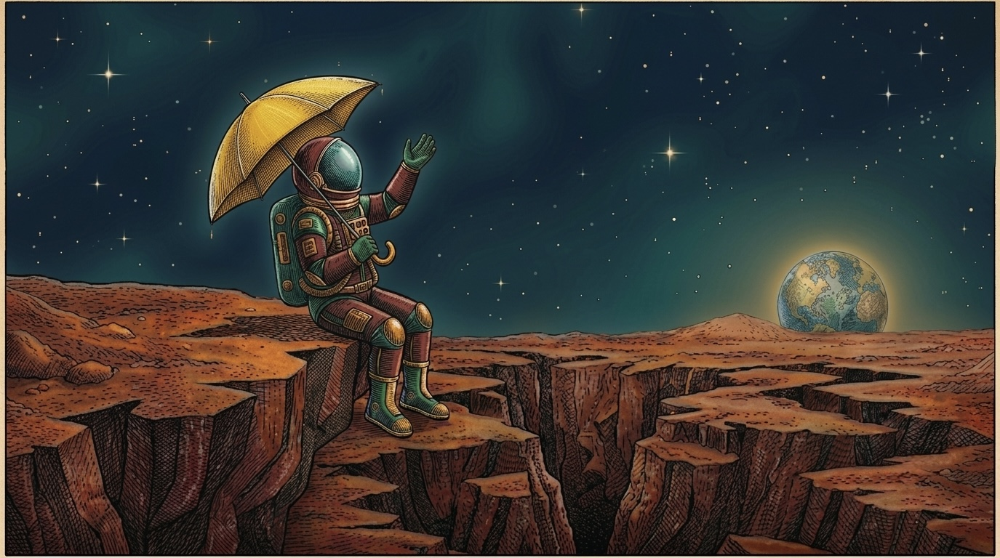
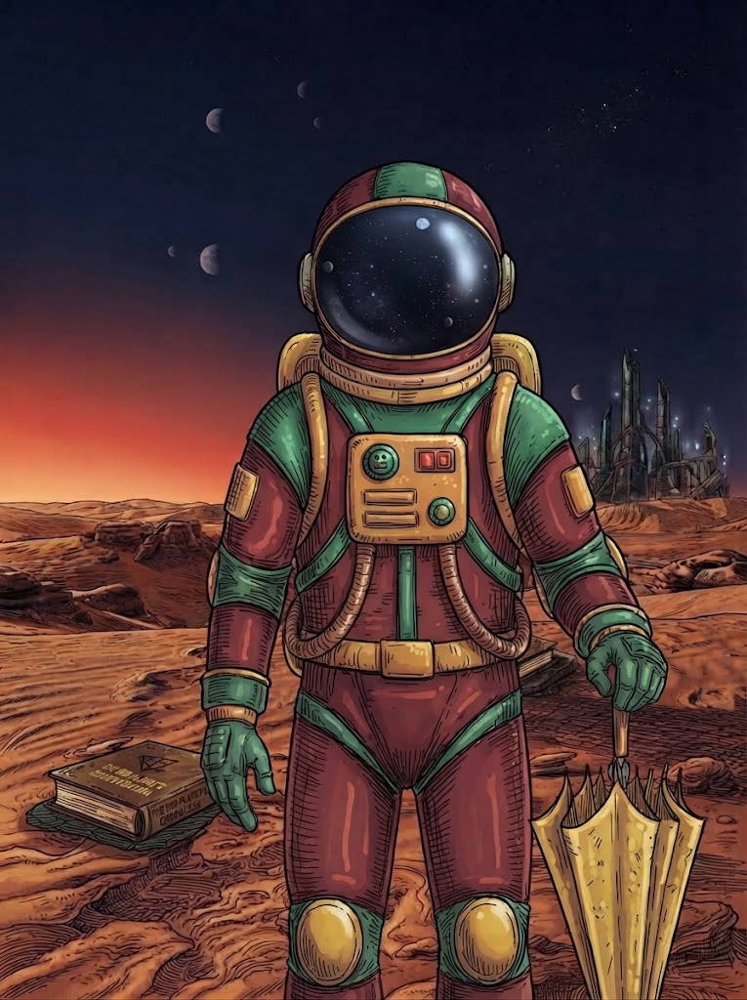

--
Días
Un homenaje a la ciencia ficción y al cuento de Ray Bradbury que le da nombre a esta edición del Festival de Literatura de Bogotá.

Edición actual Ir a "Vendrán Lluvias Suaves" →
Ciclo gratuito de talleres virtuales inspirados en el universo de Ray Bradbury.
Leer más →